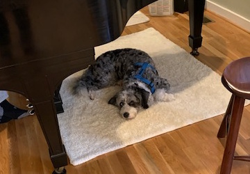
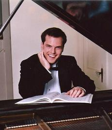
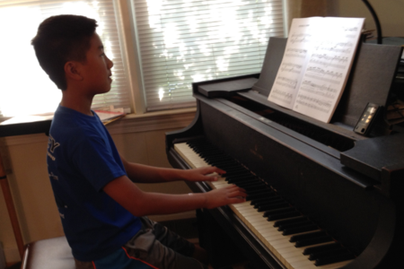

{kind=link}

Kosutic Piano Studio
Piano Lessons in Fairfax
For over 25 years, I have enjoyed helping children of all ages reach their artistic potential. Piano study helps all children develop musically, personally, and intellectually - daily practice, lessons, group classes, recitals, and participation in festivals and competitions build character and confidence. Kids learn the stepping stones of discipline and appreciation of piano music - musical skills foster mental and personal discipline - lessons which last a lifetime - and kids can apply to any other fields of study.
Please contact me with any questions. Ph. 571-499-0057

Private lessons are structured into four parts: technique, sight-reading, musical repertoire, and theory.
Children develop good taste in music and art through exposure to a variety of different styles, and I assign music that is from various style periods and moods and character. Students grow best when challenged in different ways, and so I assign students music at different levels of difficulty to help maximize their growth. Students enjoy picking out new music throughout the school year, but we pick out the bulk of new music in the summer months to map it out ahead of the new school year - this alleviates the stress of the Fall season. We choose music based on what events the child will participate in the upcoming year.
Hanon, Scales, Broken Chords and Blocked Chords, Arpeggios, Chromatic scales. Focus is on dropping arm weight into the keys, shifting weight from finger to finger, and developing fast finger reflexes. All this is done in order to create a good singing tone, and to this end we focus on Listening as we play.
Reading is fundamental, and I assign weekly sight-reading which i check every lesson. I use a variety of sight-reading methods including Four-Star Series, Winning Rhythms, Scales and Chords are Fun and many others.
Reading and Writing "go hand in glove," and is incorporated into the lessons. Most students participate in the NVMTA Theory Mastery Day Test, and we prepare carefully for that event in February.
Studio Recitals are held in early December, mid-May, and in August. They are held at different locations such as The Women's Club of Arlington, They Lyceum, Unitarian Universalist Congregation of Fairfax.
Group Classes are vitally important to the growth of young pianists. They are held monthly, and provide a positive forum for students to practice performing their repertoire, develop confidence in their own abilities, learn from watching others, participate in listening games and activities. We have food following some of the classes so the students get to know each other better and build friendships and a sense of community within the studio.
My students prepare, participate and compete in a wide variety of events, such as the NVMTA Concerto Competition, Fall and Spring Festival, VMTA Theory Day, and much more.
Full list of student awards This year's awards
Alumni of the Kosutic Piano Studio have excelled in their academic study, and have gone on to many prestigious colleges and universities such as Princeton, M.I.T., Columbia, University of Pennsylvania, University of Maryland, Georgetown, Brown, Stanford, Berkeley, UVA, James Madison, Virginia Tech, Colorado, and many others.
The life lessons learned in piano study prepare students for a rich and active professional life that is full of artistic pursuits as well as creative thinking that benefits a career in any field. Alumni have continued on with their musical study during their collegiate lives as well as afterwards - enjoying music as a life-long pursuit and sharing with their family and friends.

Everyone has different goals for their piano study. I have two tracks in my studio: Competitive Track, and Artistic Track.
Music is a DISCIPLINE that requires much hard work and concentration. It does not offer instant gratification, and students and their parents must make a long-term commitment to experience musical development.
Generally, one hour of daily practice (at least) is recommended for serious musical growth.
It is the responsibility of the parents to set up a quiet practice area free from distractions, practice with their child in the younger years, and monitor them as they grow up and develop to ensure they are practicing properly. Daily practice is just as important as your lesson - schedule it into you day just like your other after-school activities.
As students grow up, their schedules may become tight, but strong skills will last through high school if they do good work as young children - piano study can continue into high school! We build these life-long skills between the ages of 6-12 - regular practice in these young years is extremely important!
Jennifer Zhang (2nd Place in 10th–12th Grade)
Genevieve Cheng (3rd Place in 7th–8th Grade)
Olivia Zhou (3rd Place in 7th–8th Grade)
Izzie Chen (HM in 3rd–4th Grade)
925 total participants this year!
2nd Round – Arianna Wang-Ojha, Logan Zhong, Genevieve Cheng
Score of 100% – Genevieve Cheng, Jennifer Zhang
ALL SUPERIORS! – Hannah Suwandhi, Arianna Wang-Ojha, Andrew Zi, Mei Zinner
Summer Bitar, Raiden Chan, Isabel Chen, Genevieve Cheng, Ben Duong, Vinny Greendyk, HeeDoh Kang, Raghav Kuruba, Vivian Lee, Celina Liu, Ethan Liu, Dominika Loisha, Madeline Roark, Jacob Oswald, Katherine Oswald, Bella Sang-Zheng, Hannah Suwandhi, Yunika Suwandhi, Cyrus Taheri, Arianna Wang-Ojha, Olivia Zhou, Andrew Zi, Mei Zinner
34 Participants – All Superiors
60 Point Trophy – Celina Liu
45 Point Trophy – Vivian Lee, Yunika Suwandhi, Cyrus Taheri
30 Point Trophy – Olivia Zhou
15 Point Trophy – Summer Bitar, Isabel Chen, Vinny Greendyk, HeeDoh Kang, Raiden Chen
30 Participants (Studio Avg. 89%)
High Score Tie (at 103%) – Katherine Oswald and Logan Zhong
101% – Ethan Liu
100% – Izzie Chen, Omeed Ghaffarzadegan, Vinny Greendyk
Superior Ratings – Ethan Chen, Izzie Chen, Omeed Ghaffarzadegan, Vinny Greendyk, Abigail Hong, Ethan Liu, Jacob Oswald, Katherine Oswald, Nader Tabandeh, Jason Wang, Arianna Wang-Ojha, Olivia Zhou, Logan Zhong, Mei Zinner
Excellent Ratings – HeeDoh Kang, Vivian Lee, Madeline Roark, Hannah Suwandhi, Kevin Yang-Wang
Very Good Ratings – Elena Casassa, Raiden Chan, Richard Liu, Zara Robinson, Bella Sang-Zheng, Kian Tabandeh
{kind=link}